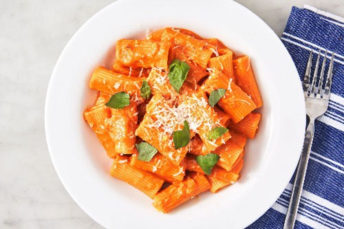

Vodka Pasta

Description
Cheesy and chewy parmesan tossed in creamy tomato sauce over tubed pasta - what more could
ya need?
Ingredients
- 3 tbsp. butter
- 1 shallot, minced
- 2 cloves garlic, minced
- 1/2 c. tomato paste
- 1/2 tsp. crushed red pepper flakes
- 2 tbsp. vodka
- Kosher salt
- 1 lb. tubed pasta, such as penne or rigatoni
- 1/2 c. heavy cream
- 1/2 c. freshly grated Parmesan, plus more for serving
- Basil, for serving
Steps
- In a large skillet over medium heat, melt butter. Add shallot and garlic and cook, stirring frequently,
until softened, 4 to 5 minutes.
- Add tomato paste and red pepper flakes and cook, stirring frequently, until paste has coated shallots
and garlic and is beginning to darken, 5 minutes.
- Add vodka to pot and stir to incorporate, scraping up any browned bits from the bottom of the pot.
Turn off heat.
- Bring a large pot of salted water to a boil and cook pasta until al dente. Reserve 2 cups of pasta water
before draining.
- Return sauce to medium heat and add 1/4 cup of pasta water and heavy cream, stirring to combine. Add half
the Parmesan and stir until melted. Turn off heat and stir in cooked pasta. Fold in remaining Parmesan,
adding more pasta water (about a tablespoon at a time) if the sauce is looking dry. Season with salt if
needed. Serve topped with more Parmesan and torn basil leaves.